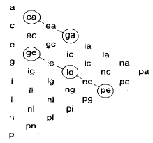
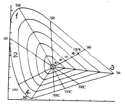

컬러리스트산업기사 (2004-08-08 기출문제)
1과목: 색채심리
1. 식욕을 돋구어 주며 패스트푸드 식당의 색채 계획에 적합한 색채는 ?
- 녹색
- 파랑
- 빨강
- 보라
(정답률: 알수없음)

2. 색채를 조절할 때 적합하지 않는 것은 ?
- 공장이나 사무실의 천장은 바닥재의 색보다 밝은 색이 적합하다.
- 상품 진열장의 바탕색을 밝은 오렌지색으로 하면 모든 색채가 돋보인다.
- 시선을 끌어 판매량을 높이는 상점의 색은 밝은 노랑색을 사용하면 좋다.
- 수술실 환경색을 백색에서 청록색으로 바꿔 현기증, 졸도현상을 해소한다.
(정답률: 알수없음)
3. 연령이 낮을수록 원색계열과 밝은 톤을 선호하다가 성인이 되면서 단파장의 파랑, 녹색을 점차 좋아하게 되는 색채 선호도 변화의 이유는 ?
- 자연환경의 차이
- 기술의 습득의 증가
- 지적 능력의 증대
- 인문환경의 영향
(정답률: 알수없음)
4. 모더니즘의 대두와 함께 주목을 받게 된 색은 ?
- 빨강과 자주
- 노랑과 청색
- 흰색과 검정색
- 베이지색
(정답률: 알수없음)
5. 힌두교와 불교에서 신성시되는 종교색은 ?
- 빨강
- 파랑
- 노랑
- 검정
(정답률: 알수없음)
6. 흰색 와이셔츠에 짙은 파란색 자켓을 입고 어두운 회색 바지를 착용하였다. 여기에 대조감이 높은 색의 넥타이를 이용하여 액센트를 주고자 한다. 다음에 제시되는 넥타이 중 이러한 의도에 가장 적절한 넥타이는 어느 것인가 ?
- 검정색 바탕에 흰색 사선 무늬가 들어간 넥타이
- 짙은 빨강색에 밝은 파란색 사선 무늬가 들어간 넥타이
- 밝은 회색에 파란색 사선 무늬가 들어간 넥타이
- 밝은 파란색에 엷은 노란색 사선 무늬가 들어간 넥타이
(정답률: 알수없음)
7. 다음의 배색 조건에 대한 설명 중 가장 대조감이 높은 배색은 무엇인가 ?
- 흰색과 밝은 노랑색, 밝은 하늘색을 활용한 가벼운 느낌의 배색
- 선명한 빨강과 파랑, 초록색을 활용한 축제분위기의 삼원색 배색
- 검정, 짙은 파란색, 회색을 이용한 모던한 느낌의 배색
- 회색과 회색 띈 핑크, 회색띈 보라색을 이용한 우아한 느낌의 배색
(정답률: 알수없음)
8. 색채조절에 관한 사항이 아닌 것은 ?
- 심리학, 생리학, 조명학, 미학 등에 근거를 둔다.
- 미적효과와 선전효과를 겨냥한 감각적 배색이다.
- 색채관리가 포함된다.
- 홍역 환자의 병실에 빨간 헝겊을 드리워 보온을 꾀하는 기능적 색의 사용법이 있다.
(정답률: 알수없음)
9. 노란색이나 레몬색을 보면 과일냄새를 느끼는 색의 감각 효과는 ?
- 공감각
- 시감각
- 상징성
- 연상성
(정답률: 알수없음)
10. 다음 중 언어적 기능을 대신하고 있는 색채의 사용방법으로 볼 수 없는 것은 ?
- 두 종류의 차 포장상자에 녹차는 초록색 포장지를, 대추차는 빨간색 포장지를 사용하여 포장하였다.
- 지하철 1호선은 빨간색, 2호선은 초록색으로 표시하였다.
- 선물을 빨간색 포장지와 분홍색 리본테이프로 포장 하였다.
- 더운 물은 빨간색 손잡이를, 차가운 물은 파란색 손잡이를 설치하였다.
(정답률: 알수없음)
11. 자동차의 선호색에 대한 일반적 경향을 설명하는 것이 아닌 것은 ?
- 일본의 경우 흰색 선호경향이 압도적이다.
- 한국의 경우 대형차는 어두운 색을 선호하고 소형차는 경쾌한 색을 선호한다.
- 자동차 선호색은 지역 환경과 생활 패턴에 따라 다르다.
- 여성의 선호색은 그린과 은색의 밝은 색이다.
(정답률: 알수없음)
12. 연속배색의 효과로 틀린 것은 ?
- 색채가 조화되는 시각적 유목감을 준다.
- 색채, 색조의 변형이다.
- 색상 그라데이션의 경우 고채도 톤에서는 효과를 얻기가 어렵다.
- 자연의 색상배열 속에서 볼 수 있다.
(정답률: 알수없음)
13. 다음 중 말레이시아, 시리아, 태국, 아일랜드, 브라질, 미국 등의 나라에서 혐오색으로 인식되어 잘 사용하지 않는 색은 ?
- 청색
- 자색
- 황색
- 백색
(정답률: 알수없음)
14. 흰 바탕에 빨간색 십자가를 보게 되면 적십자라는 단체를 떠올리게 되는 것은 빨간색 십자가와 관련한 어떤 심리작용인가 ?
- 연상
- 기억
- 착시
- 잔상
(정답률: 알수없음)
15. 수상에서 노란색 고무 보트를 사용하도록 한 규정은 색의 어떠한 기능을 이용한 것인가 ?
- 표준
- 연상
- 상징
- 안전
(정답률: 알수없음)
16. 5 ~ 6세의 어린이의 색채기호에 대한 설명 중 틀린것은 ?
- 복잡한 배색보다 단순한 배색을 좋아한다.
- 무채색보다 유채색을 더 좋아한다.
- 대체로 저명도의 색보다 고명도의 색을 더 좋아한다.
- 고채도의 색상보다 저채도의 색을 좋아한다.
(정답률: 알수없음)
17. 색채의 심리효과 중 맞는 것은 ?
- 중량감에 가장 큰 영향을 미치는 것은 채도이다.
- 채도보다는 색상이 색채의 경연감에 영향을 미친다.
- 따뜻한 색이나 명도가 낮은 색은 팽창색이다.
- 무채색과 유채색을 떠나서 어두운 색은 무게감을 준다.
(정답률: 알수없음)
18. 병원의 색채계획에 있어서 가장 적절한 것은 ?
- 일반적으로 크림색(먼셀기호 5.5Y8.5/3.5)을 벽에 사용한다.
- 회복기 환자에게는 어두운 조명과 시원한 색이 적합하다.
- 휴식을 요하거나 만성 환자는 밝은 조명과 따뜻한 색채가 적합하다.
- 입원실은 환자의 시각과 감정의 위안을 위해 벽면 색채를 모두 통일한다.
(정답률: 알수없음)
19. 색채의 심리효과란 ?
- 다른 색의 영향을 받아 본래의 색과 다른 색으로 보이는 현상
- 다른 색의 영향을 받아 본래의 색이 사라져 버리는 현상
- 눈의 망막에서 일어난다.
- 생리적 자극 방법에 따라 다르게 나타난다.
(정답률: 알수없음)
20. 다음 중 적용된 색채의 이미지가 제품의 장점과 어울리지 않는 것은 무엇인가 ?
- 부드러움이 증가된 아동용 순면침구 - 짙은 청색과 회색 줄무늬를 사용하여 심플하고 모던한 느낌으로 연출하였다.
- 건강식품 광고지 - 초록색 바탕에 흰색 글씨를 사용하였다.
- 바람의 세기가 여러 단계로 조절되는 선풍기 - 흰색과 파란색을 주조색으로 하고 바람의 세기를 조절하는 버튼은 파란색으로 점진적으로 변화시켰다.
- 가열 속도가 빠른 버너 - 전체적으로 선명한 빨간색과 동작 버튼은 밝은 노란색으로 하였다.
(정답률: 알수없음)
2과목: 색채디자인
21. 빅터 파파넥의 복합기능에 대한 설명으로 가장 부적합한 것은 ?
- 형태와 기능을 분리시키지 않고 좀 더 포괄적인 의미에서의 기능을 복합기능이라고 규정지었다.
- 복합기능에는 방법(Method), 용도(Use), 필요성(Need) 과 같은 합리적 요소들이 포함된다.
- 복합기능에는 연상(Association), 미학(Aesthetics)과 같은 감성적 요소들은 포함되지 않는다.
- 특수한 목적을 달성하기 위한 자연과 사회에 대한 의도적인 실용화를 의미하는 것이 텔레시스 (Telesis)이다.
(정답률: 알수없음)
22. 데니스 가보에 의해 개발된 레이져를 이용한 입체적 표현 매체를 무엇이라고 하는가 ?
- 픽토그램
- 홀로그램
- 다이어그램
- 플라즈마
(정답률: 알수없음)
23. 구운 빵 냄새를 슈퍼마켓에 활용했더니 매출액이 증가하였다. 영화관 입구에서 팝콘 향기를 내자 판매량이 급격하게 증가 하였다. 이는 어떤 마케팅 기법인가 ?
- 감성 마케팅
- 색채 마케팅
- 체험 마케팅
- 환상 마케팅
(정답률: 알수없음)
24. 실용목적과 심미적 기능을 겸한 공업생산품을 디자인하는 분야로 적당한 것은 ?
- 시각디자인
- 제품디자인
- 환경디자인
- 실내디자인
(정답률: 알수없음)
25. 마케팅 전략은 크게 직감적 전략, 분석적 전략, 그리고 무엇으로 구분되는가 ?
- 감각적 전략
- 전통적 전략
- 통합적 전략
- 이미지 전략
(정답률: 알수없음)
26. 인테리어디자인 프로세스 중 올바른 것은 ?
- 문제인식 - 분석 - 실행 - 결정
- 문제인식 - 분석 - 결정 - 실행
- 문제인식 - 결정 - 분석 - 실행
- 분석 - 문제인식 - 결정 - 실행
(정답률: 알수없음)
27. 디자인의 목표와 관련하여 디자인의 기능주의와 관련이 없는 것은 ?
- 형태의 아름다움을 가장 먼저 고려해야 한다.
- 기능적 형태가 가장 아름답다.
- 루이스 설리반 등이 있다.
- 디자인의 목적 자체가 합리적으로 설정되어야 한다.
(정답률: 알수없음)
28. 기존 제품의 재료나 기능 또는 형태를 개량하고 개선하는 것을 무엇이라 하는가 ?
- 리디자인(re-design)
- 리스타일(re-style)
- 이미지 디자인(image design)
- 혁신 디자인(advanced design)
(정답률: 알수없음)
29. 세계적으로 유명한 음료회사인 코카콜라는 모든 제품과 회사의 표시 등을 빨간색으로 통일하고 있다. 이러한 것은 기업이 무엇을 위해 실시하는 전략인가 ?
- 색채를 이용한 제품의 포지셔닝(positioning)
- 색채를 이용한 브랜드 아이덴티티 (brand identity)
- 색채를 이용한 소비자 조사
- 색채를 이용한 스타일링 (styling)
(정답률: 알수없음)
30. 형태 지각심리(gestalt psychology)의 4개 법칙에 해당되지 않는 것은 ?
- 보완성
- 접근성
- 유사성
- 폐쇄성
(정답률: 알수없음)
31. 컬러 TV 출현시 컬러 TV의 형광발색에 의하여 원색들이 주사선에 번져 보이는 것을 방지할 수 있는 가장 좋은 분장 방법은 ?
- 핑크계 파운데이션을 진하게 바른다.
- 립스틱은 채도가 낮은 빨강색을 칠한다.
- 립스틱은 원색의 빨강색을 칠한다.
- 돋보이게 강한 원색 의상을 입는다.
(정답률: 알수없음)
32. 다음 디자인 사조에 관한 설명 중 연결이 잘못된 것은 ?
- 미니멀리즘 - 순수한 색조대비와 강철 등의 공업재료의 사용
- 해체주의 - 분석적 형태의 강조를 위한 분리채색
- 포토리얼리즘 - 원색적이고 자극적인 색, 사진과 같은 극명한 화면구성
- 큐비즘 - 기능과 관계없는 장식 배제
(정답률: 알수없음)
33. 디자인은 생태학적으로 건강하고 유기적 전체에 통합하는 인간 환경의 구축을 궁극적 목표로 설정되는 디자인 요건은 ?
- 합리성
- 질서성
- 친환경성
- 문화성
(정답률: 알수없음)
34. 현대 디자인의 사상적 배경은 ?
- 전통주의
- 기능주의
- 역사주의
- 절충주의
(정답률: 알수없음)
35. 색명은 뜻과 사용면에서 크게 두 가지로 나누는데 그 종류로 맞는 것은 ?
- 동색명과 관용색명
- 고유색명과 인공색명
- 자연색명과 계통색명
- 일반색명과 관용색명
(정답률: 알수없음)
36. 1980년대 후반에 확산된 에콜로지(Ecology) 경향으로 유행한 색은 ?
- 녹색, 파란색, 사이안(cyan)의 자연색조
- 빨강, 검정, 흰색, 노랑의 대비 색조
- 연보라, 하늘색, 미색, 연분홍의 파스텔 색조
- 흰색, 검정, 카키, 베이지의 내츄럴 색조
(정답률: 알수없음)
37. 수정화장의 목적이 아닌 것은 ?
- 얼굴의 단점을 보완한다.
- 색의 진출과 후퇴의 성질을 이용하여 보완한다.
- 색의 팽창과 수축의 성질을 이용하여 보완한다.
- 하이라이트 부분에 자신의 파운데이션 색상보다 더 어두운 색조를 사용한다.
(정답률: 알수없음)
38. 디자인 사조와 색채의 관계가 잘못 기술된 것은 ?
- 큐비즘의 대표적인 작가인 파블로 피카소는 색상의 대비를 적극적으로 사용하였다.
- 플럭서스에서는 회색조가 전반을 이루고 색이 있는 경우에는 어두운 색조가 주가 되었다.
- 아르데코에서는 보라색, 핑크색의 연한 파스텔 색조가 사용되었다.
- 다다이즘에서는 일반적으로 어둡고 칙칙한 색조가 사용되었다.
(정답률: 알수없음)
39. 여러 세대를 거치면서 형태의 세련과 사용상의 개선이 이루어져 나타난 인간중심의 디자인을 나타내는 디자인 요건은 ?
- 친자연성
- 독창성
- 합리성
- 문화성
(정답률: 알수없음)
40. 주거 공간의 색채계획 순서를 올바르게 나열한 것은 ?
- 주거자 요구 및 시장성 파악 - 고객의 공감 획득 - 이미지 컨셉트 설정 - 색채 이미지 계획
- 고객의 공감 획득 - 주거자 요구 및 시장성 파악 - 이미지 컨셉트 설정 - 색채 이미지 계획
- 주거자 요구 및 시장성 파악 - 이미지 컨셉트 설정 - 색채 이미지 계획 - 고객의 공감 획득
- 이미지 컨셉트 설정 - 주거자 요구 및 시장성 파악 - 고객의 공감 획득 - 색채 이미지 계획
(정답률: 알수없음)
3과목: 섹채관리
41. 4비트가 표현할 수 있는 색상수는?
- 4
- 8
- 16
- 32
(정답률: 알수없음)
42. 다음 중 색채 영상의 입력에 활용되는 CCD(Charge Coupled Device)와 가장 관련이 없는 것은?
- 디지털 카메라
- 비디오 카메라
- 스캐너
- 모니터
(정답률: 알수없음)
43. 정밀한 조색을 실현하기 위하여 컴퓨터 장치를 이용, 정밀 측색하여 자동으로 구성된 컬러런트를 정밀한 비율로 자동 조절 공급함으로써 색을 자동화하여 조색하는 시스템은?
- CMY (Cyan, Magenta, Yellow)
- CCM (Computer Color Matching)
- CCD (Charge Coupled Device)
- CMYK(Cyan, Magenta, Yellow, Black)
(정답률: 알수없음)
44. 다음은 일반적인 색료(色料)에 관한 설명이다. 맞지 않는 것은?
- 색료는 가시광선을 흡수하는 성질을 갖고 있다.
- 색료를 크게 나누면 유기색료와 무기색료로 나눌 수 있다.
- 안료는 착색하고자 하는 매질에 모두 용해된다.
- 염료는 방직 계통에 많이 사용된다.
(정답률: 알수없음)
45. 다음 중 CIE LAB 좌표로 L* = 65, a* = 30, b* = -20으로 측정된 색채에 대한 설명으로 잘못된 것은 ?
- L* 값이 높은 편이니 비교적 밝은 색이다.
- a* 값이 양(+)의 값을 갖고 있으므로 붉은 계열의 색이다.
- b* 값이 음(-)의 값을 가졌으므로 노랑이 많이 포함된 색이다.
- (a*, b*) 좌표가 원점으로부터 많이 떨어져 있으므로 채도가 높은 색이다.
(정답률: 알수없음)
46. 표준광 C란 어떤 광인가?
- 북위 40도 흐린 날 오후 2시경 북쪽창문으로 들어오는 빛
- 색온도 2856K의 완전복사체(black body)에서 나오는 빛
- 주파수 60 Hz 입력전압 220 V의 주광색 형광등에서 방출되는 빛
- 북위 35도 지역의 맑은 날 색온도 6400K의 자연광 (태양광선)
(정답률: 알수없음)
47. 디지털 색채와 관련된 다음 설명 중 맞는 것은?
- 픽셀(pixel)의 물리적 크기는 선택된 해상도에 따라 변하는 것은 아니다.
- 10ppi는 1인치당 10개의 픽셀(pixel)을 가짐을 뜻한다.
- 이미지가 1비트의 깊이로 스캔되면, 흑과 백 외에 1가지 회색톤을 더 가질 수 있다.
- 해상도는 데이터의 전체 용량과는 직접적인 관계가 없다.
(정답률: 알수없음)
48. CCM(Computer Color Matching)을 도입하는 목적과 장점이 아닌 것은?
- 일정한 품질을 생산 할 수 있다.
- 컬러런트 구성이 효율적이다.
- 원가가 절감된다.
- 숙련자만이 관리할 수 있다.
(정답률: 알수없음)
49. 다음 중 안료의 일반적인 특징을 설명하고 있는 것은?
- 물이나 기름 또는 일반 용제에 녹지 않는다.
- 표면에 친화성을 갖는 화학적 성질을 가지며 직물 염색용으로 주로 사용된다.
- 주로 용해된 액체상태로 사용되며 직물, 피혁 등에 착색된다.
- 염료에 비해 투명하며 은폐력이 적고 직물에는 잘 흡착된다.
(정답률: 알수없음)
50. 디지털 컬러에서 (R, G, B) 값이 (255, 0, 255)로 주어질 때의 색채는 ?
- 빨강(red)
- 노랑(yellow)
- 시안(cyan)
- 마젠타(magenta)
(정답률: 알수없음)
51. 짧은 파장의 빛이 입사하여 긴 파장의 빛을 복사하는 형광 현상이 있는 시료의 측정에 적합한 색채계는 어떤 것인가?
- 전방 방식의 분광식 색채계
- 후방 방식의 분광식 색채계
- 전방 방식의 필터식 색채계
- 후방 방식의 필터다초점식 색채계
(정답률: 알수없음)
52. 도료의 기본 구성 요소 중 다양한 색채를 표현 할 수 있는 성분은?
- 안료(Pigment)
- 수지(Resin)
- 용제(Solvent)
- 첨가제(Additives)
(정답률: 알수없음)
53. 다음 중 한국산업규격(KS)이 정한 안전색 중에서 자주색이 의미하는 것은?
- 방화
- 위험
- 조심
- 방사능
(정답률: 알수없음)
54. 분광광도계의 설명으로서 틀린 것은?
- 조명 각도는 항상 같은 조건에서 측정할 수 있다.
- 분광반사율을 측정할 수 있다.
- 시야를 바꿔 색채값을 얻으려면 시료의 개구부를 바꿔야 한다.
- 다양한 광원조건 하에서 색채값을 얻을 수 있다.
(정답률: 알수없음)
55. 물체의 색을 나타내는데 모든 분야에서 가장 일반적으로 사용되는 표색계는?
- L*a*b* 표색계
- Hunter Lab 표색계
- (x,y) 색도계
- XYZ 표색계
(정답률: 알수없음)
56. 다음 중 CCM(computer color matching)의 장점은?
- 분광반사율을 기준색과 일치시키므로 아이소머리즘을 실현할 수 있다.
- 기본 재질이 변할때마다 필요한 데이터를 입력하지 않아도 된다.
- 여러 가지 발생과정에서 혼입되는 각종 요인들에 의해 색채가 변할 염려가 없다.
- 다양한 조건에서 발생되는 메타메리즘을 실현할 수 있다.
(정답률: 알수없음)
57. 측색 표기방법의 하나인 L*a*b*에서 기호 b*와 관계된 색은?
- green - red
- yellow - blue
- green - blue
- yellow - red
(정답률: 알수없음)
58. 동일한 물체색도 조명에 따라 색이 달라져 보이는 현상을 무엇이라 하는가?
- 메타메리즘
- 푸르킨예현상
- 광원의 연색성
- 암순응
(정답률: 알수없음)
59. 다음은 광원과 시야에 대한 설명이다. 옳지 않은 것은?
- 좁은 면적과 넓은 면적의 색채가 다르게 보이는 경우는 시야가 다르기 때문이다.
- 시야에 따라 색채가 다르게 보이는 경우는 우리 눈의 망막의 원추세포와 막대세포의 분포가 고르지 않기 때문이다.
- 광원에 따라 색차가 변하는 현상을 메타메리즘이라고 한다.
- 백열등에서 난색 계통의 색상이 강렬하게 보이는 것은 광원에 단파장이 많기 때문이다.
(정답률: 알수없음)
60. 액정의 투과도의 변화를 이용하여 각종 장치에서 발생되는 여러가지 전기적인 정보를 시각정보로 변화시켜 전달하는 전자소자를 무엇이라 하는가?
- LCD
- CCD
- CRT
- CIE
(정답률: 알수없음)
4과목: 색채지각의이해
61. 색채의 공감각에서 미각의 설명 중 틀린 것은 ?
- 음식의 색에 따라 식욕이 증진되기도 하고 감퇴되기도 한다.
- 주황색은 강하게 식욕을 자극하는 색이다.
- 파란색은 식욕을 돋구는 색이다.
- 빨간색은 단맛과 매운맛이 나는 색이다.
(정답률: 알수없음)
62. 다음 중 가장 후퇴되어 보이는 색은 ?
- 빨강
- 노랑
- 주황
- 남색
(정답률: 알수없음)
63. 햇살이 밝은 운동장에서 어두운 실내로 이동할 때, 빨간색은 점점 사라져 보이고 청색이 밝게 보이는 시각현상은 ?
- 메타메리즘
- 항시성
- 보색잔상
- 푸르킨예 현상
(정답률: 82%)
64. 빨간색에 흰색을 섞으면 그 비율에 따라 진분홍, 분홍, 연분홍으로 변화하게 되는데 이런 경우, 삼속성 중 처음의 빨간색에 비해 떨어지는 것은 무엇인가 ?
- 명도
- 채도
- 색상
- 광도
(정답률: 알수없음)
65. 다음 색에 관한 설명 중 틀린 것은 ?
- 색의 밝기를 명도라 한다.
- 색의 순도를 채도라 한다.
- 유사한 색끼리 근접하여 배열한 것을 색상환이라 한다.
- 빨강, 노랑, 파랑 등을 무채색이라 한다.
(정답률: 알수없음)
66. 파랑바탕에 노랑색 글씨가 진출되어 보이도록 하기 위해서 해야 할 일로 적합하지 않은 것은 ?
- 바탕색인 파랑의 채도를 떨어뜨린다.
- 글씨의 노랑색 채도를 높인다.
- 바탕과 글씨의 명도차를 줄인다.
- 바탕색의 명도를 낮춘다.
(정답률: 알수없음)
67. 다음 내용 중 가장 타당성이 낮은 것은 ?
- 흰색 자동차보다 검은 자동차가 더 작아 보인다.
- 검은 바탕 위의 노란 배색은 명시도(시인성)가 높다.
- 연두와 보라색은 여름용품에 사용하면 시원해 보인다
- 적색 신호등이 청색 신호등보다 더 앞으로 진출하는 것처럼 느껴진다.
(정답률: 알수없음)
68. 다음은 잔상에 대한 설명이다. 잘못된 것은 ?
- 눈에 비쳤던 자극이 사라져도 얼마 동안은 잔상이 남는다.
- 잔상의 출현은 자극의 강도, 지속시간, 그리고 크기에 무관하다.
- 원래 감각과 같은 정도의 밝기나 색상을 띤 잔상을 양성잔상(혹은 정의 잔상)이라 한다.
- 원래 감각과 반대의 밝기나 색상을 띤 잔상을 음성잔상(혹은 부의 잔상)이라 한다.
(정답률: 알수없음)
69. 빛의 파장 범위가 620∼780 nm인 경우 어느 색에 해당되는가 ?
- 빨간색
- 노랑색
- 녹색
- 보라색
(정답률: 알수없음)
70. 고딕성당의 스테인드 글라스의 제작기법에서 원색으로 이루어진 바탕그림 사이에 검은색 띠를 두른 것은 어떤 대비를 약화시키려는 시각적 보정작업인가 ?
- 동시대비
- 계시대비
- 연변대비
- 색상대비
(정답률: 알수없음)
71. 백색광을 노란색 필터에 통과시킬 때 통과되지 않는 파장은 ?
- 장파장
- 중파장
- 단파장
- 적외선
(정답률: 알수없음)
72. 다음 중 동시대비에 대한 설명으로 옳은 것은 ?
- 동시대비는 색자극이 순차적으로 주어지는 경우에 일어난다.
- 동시대비와 계시대비는 물리적 자극방법으로 분류된 색채대비이다.
- 동시대비는 시점을 한 곳에 집중시키려는 색채지각 과정에서 일어나는 현상으로 순간적으로 일어난다.
- 동시대비는 일반적으로 색채의 음성적 잔상과 동일한 현상으로 이해된다.
(정답률: 알수없음)
73. 따뜻한 색이나 명도가 높은 색은 외부로 확산하려는 성격을 지니고 있다. 이러한 색을 무엇이라고 하는가 ?
- 팽창색
- 수축색
- 진출색
- 후퇴색
(정답률: 알수없음)
74. 다음 중 베졸트(Wihelm von Bezold) 효과를 바르게 설명한 것은 ?
- 베졸트 효과는 감법회전혼색의 결과이다.
- 베졸트 효과는 가법회전혼색의 결과이다.
- 베졸트 효과는 감법병치혼색의 결과이다.
- 베졸트 효과는 가법병치혼색의 결과이다.
(정답률: 40%)
75. 가법혼색에 관한 다음 내용 중 맞는 것은 ?
- 파랑과 녹색을 합하면 청록이 된다.
- 녹색과 빨강을 합하면 노랑이 된다.
- 빨강과 파랑을 합하면 보라가 된다.
- 3원색을 모두 합하면 검정이 된다.
(정답률: 알수없음)
76. 어떤 두 색이 서로 가까이 있을 때 그 경계의 부분에서 강한 색채대비가 일어나는 현상은 ?
- 차이대비
- 보색대비
- 착시대비
- 연변대비
(정답률: 알수없음)
77. 눈에서 조리개 구실을 하면서 외부에서 들어오는 빛의 양을 조절하는 부분은 ?
- 각막
- 수정체
- 망막
- 홍채
(정답률: 알수없음)
78. 좁은 바닥을 더 넓어 보이도록 색을 조정하려 한다. 다음중 가장 적합한 색은 ?
- 검정색
- 노랑색
- 진한 회색
- 빨강색
(정답률: 알수없음)
79. 가법혼색의 설명으로 틀린 것은 ?
- 병치혼합, 회전혼합도 일종의 가법혼합이다.
- 빛의 혼합과 같이 빛에 빛을 더하여 얻어지는 원리에 의한 것이다.
- 인상파 화가 쇠라의 점묘법에 의한 그림의 혼색 효과에서 나타나는 혼색방법이다.
- 가법혼색은 혼색할수록 점점 어두운 색이 된다.
(정답률: 알수없음)
80. 색의 대비현상에 대한 내용으로 틀린 것은 ?
- 동일한 색이라도 면적이 커지면 더욱 밝고 선명하게 보이는 현상을 면적대비라고 한다.
- 명도가 다른 두 색이 있을 때 밝은 색은 더 밝게, 어두운 색은 더 어둡게 보이는 현상을 명도대비라 한다
- 서로 보색관계인 두 색이 있을 때 서로의 영향으로 본래의 색보다 채도가 낮아 보이는 현상을 보색대비라고 한다.
- 두 색이 붙어있을 때 그 경계부분에서 나타나는 대비 현상이 먼 곳보다 더욱 강하게 일어나는 것을 연변대비라고 한다.
(정답률: 알수없음)
5과목: 색채체계의이해
81. 톤(tone)분류를 바탕으로 하는 색이름의 특성에 관한 설명 중 잘못된 것은 ?
- 색채의 3속성에 의한 방법보다 색채조화를 훨씬 수월하게 처리할 수 있다.
- 톤 분류법에 의해 색이름을 알게 하면 색채를 쉽게 기억할 수 있다.
- 우리의 일상적인 감각과 어울려 이미지 반영이 용이하다.
- 색의 이미지를 정량화 함으로써 색상의 고유특성을 부각시킬 수 있다.
(정답률: 알수없음)
82. 일본색채연구소가 1964년에 개발한 '일본색연배색체계'와 가장 관련 있는 것은 ?
- P.C.C.S. 표색계
- 먼셀 표색계
- CIE 표색계
- NCS 표색계
(정답률: 알수없음)
83. 빛의 혼색실험을 기초로 한 정량적인 표색 체계는 ?
- NCS(Natural Color System) 표색계
- CIE(국제조명위원회) 표색계
- P.C.C.S.(Practical Color Coordinate System)표색계
- Munsell 표색계
(정답률: 알수없음)
84. 다음 오스트발트 색채조화원리에 관한 그림에서, 윗변의 평행선상에 표시된 조화와 관계 있는 것은 ?

- 등백계열의 조화
- 등흑계열의 조화
- 등순계열의 조화
- 등가색환의 조화
(정답률: 알수없음)
85. Hunter Lab 색공간의 설명으로 틀린 것은 ?
- 유럽 디자인계에서만 주로 사용된다.
- 1931년 CIE의 Yxy보다 시각적으로 더욱 통일된 색공간을 제공한다.
- 헌터(R.S. Hunter)에 의해 개발된 것이다.
- 혼색계에 속한다.
(정답률: 알수없음)
86. 전미색채협의회의 ISCC-NBS 색명법의 설명중 틀린 것은 ?
- 색상명은 Pink, Red, Orange, Brown, Yellow, Olive, Green, Blue, purple을 사용한다.
- 전미색채협회와 미표준국 공동연구결과이며, 한국산업 규격의 색이름도 이를 토대로 한다.
- 미국에서 통용되는 관용색명을 정리한 것이다.
- 색채의 명도는 moderate를 중심으로 높은 것은 light, very light, 명도가 낮은 것은 dark, verydark로 한다.
(정답률: 알수없음)
87. 다음 색채조화의 목적에 관한 설명 중 가장 적합한 것은?
- 색을 분류하고 지시하는 기능의 제고
- 색의 질서 있는 배열과 기호화
- 배색을 통한 기능적 측면과 내적 측면의 만족
- 의미와 상징을 통한 색의 관념성 부각
(정답률: 알수없음)
88. 먼셀 색입체의 수직 단면도에서 볼 수 없는 것은 ?
- 다양한 색상환
- 다양한 명도
- 다양한 채도
- 보색 색상면
(정답률: 알수없음)
89. 오스트발트 색채체계의 단일 색상면 삼각형 내에서 동일한 양의 백색을 가지는 색채를 일정한 간격으로 선택하여 배색함으로써 얻을 수 있는 색채조화는 ?
- 등백색 조화
- 등순색 조화
- 등흑색 조화
- 등가색환 조화
(정답률: 알수없음)
90. 7.5 RP 5/8은 먼셀표색계에 따른 유채색의 표기이다. 이색의 속성으로 맞는 것은 ?
- 명도 7.5, 색상 5 RP, 채도 8
- 색상 7.5 RP, 명도 5, 채도 8
- 채도 7.5, 색상 5 RP, 명도 8
- 색상 7.5 RP, 채도 5, 명도 8
(정답률: 알수없음)
91. 오스트발트 표색계에서 어떤 유채색 '3Ypg'의 표기 의미를 올바르게 연결한 것은 ?
- 3Y:색 상, p:흑색량, g:백색량
- 3Y:순색량, p:흑색량, g:백색량
- 3Y:색 상, p:백색량, g:흑색량
- 3Y:순색량, p:명 도, g:채 도
(정답률: 알수없음)
92. 다음 중 관용색명이 아닌 것은 ?
- 빨강, 파랑, 검정, 노랑
- 살색, 쥐색, 상아색, 팥색
- 코발트블루, 프러시안블루
- 연한 회색, 어두운 녹색
(정답률: 알수없음)
93. 색명에 대한 기술 중 옳은 것은 ?
- 색명은 광물에서는 따오지 않는다.
- 색명은 나라별로 다른 경우가 있다.
- 색명은 표색계보다 부르기 어렵다.
- 색명은 최근에 개발되기 시작하였다.
(정답률: 알수없음)
94. NCS에서 색 뉘앙스(nuance)란 ?
- 색상의 포화도이다.
- 톤과 유사한 개념이다.
- 무채색량이다.
- 유채색의 위치이다.
(정답률: 알수없음)
95. 문· 스펜서의 색채조화론에 나타나는 용어가 아닌 것은 ?
- 동일조화
- 제 1 부조화
- 다색조화
- 대비조화
(정답률: 알수없음)
96. 먼셀표색계의 채도에 대한 설명 중 옳은 것은 ?
- 채도가 높으면 흰색에 가까워진다.
- 숫자가 클수록 채도가 낮은 것이다.
- 최고 채도는 색상마다 다르다.
- 최고 채도는 20까지 있다.
(정답률: 알수없음)
97. 오스트발트 색상환에 대한 설명 중 틀린 것은 ?
- 4색을 기준으로 만들었다.
- 다시 중간에 색을 배열하여 8색으로 만들었다.
- 우측회전으로 24색을 만들었다.
- 최종적으로 100가지의 색상을 사용한다.
(정답률: 알수없음)
98. 쥬드(D. Judd)의 색채조화원리 중 동류의 원리(친밀성의원리)에 해당하지 않는 것은 ?
- 사람의 눈에 친숙한 배색
- 노을지는 하늘을 연상할 수 있는 배색
- 다양한 색조의 변화를 가진 숲의 녹색
- 색상, 명도, 채도, 면적의 차이가 분명한 배색
(정답률: 알수없음)
99. CIE표색계에서 빨강색은 표색계의 어느 위치에 있게 되는 가 ? (그림참조)

- 1
- 2
- 3
- 4
(정답률: 알수없음)
100. 혼색계의 설명 중 맞는 것은 ?
- 일반적으로 색지각의 심리적인 속성에 따른다.
- 물리적인 색료의 혼색 실험에 기초한다.
- 먼셀표색계와 오스트발트 표색계가 있다.
- CIE 표준 표색계가 가장 대표적이다.
(정답률: 알수없음)